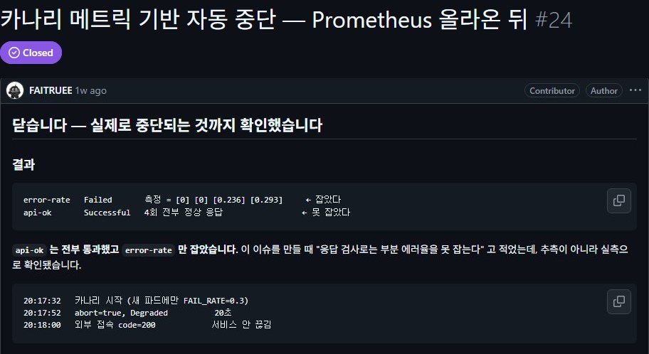
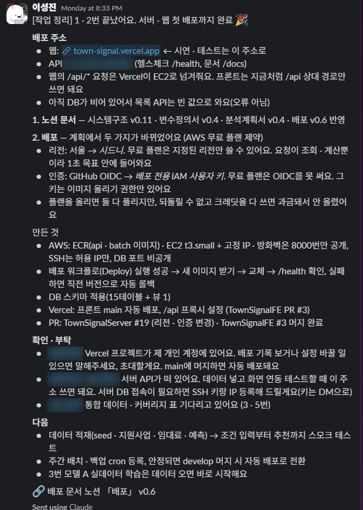
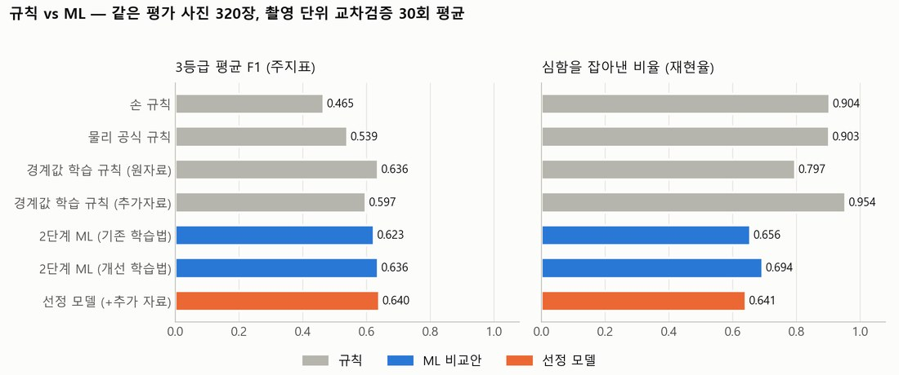
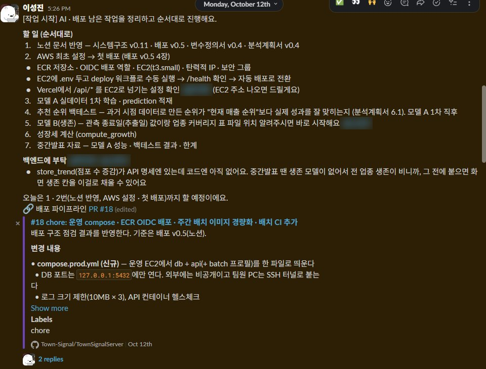
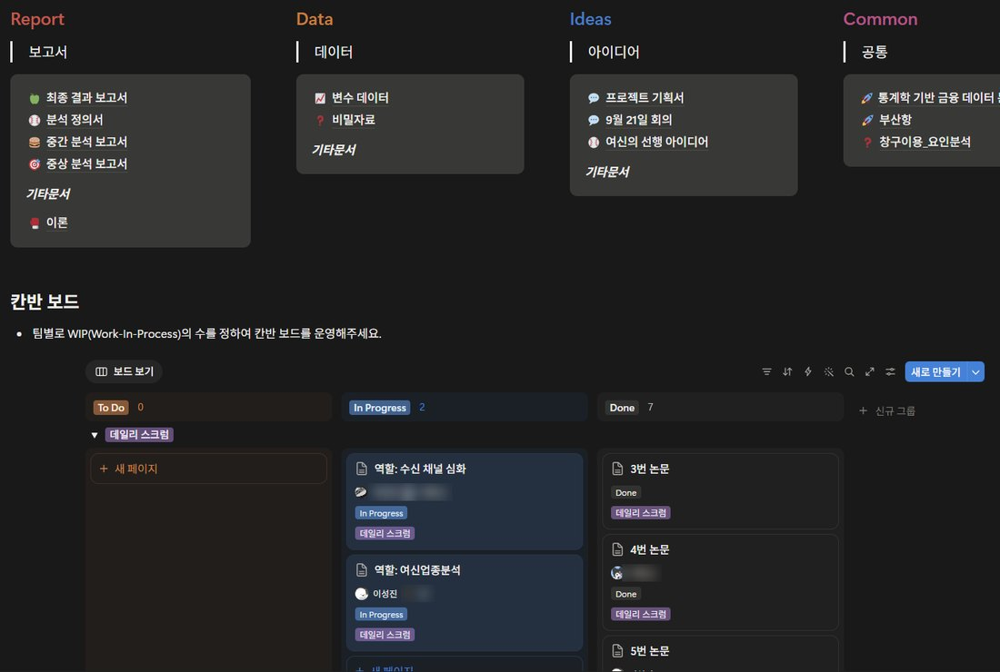
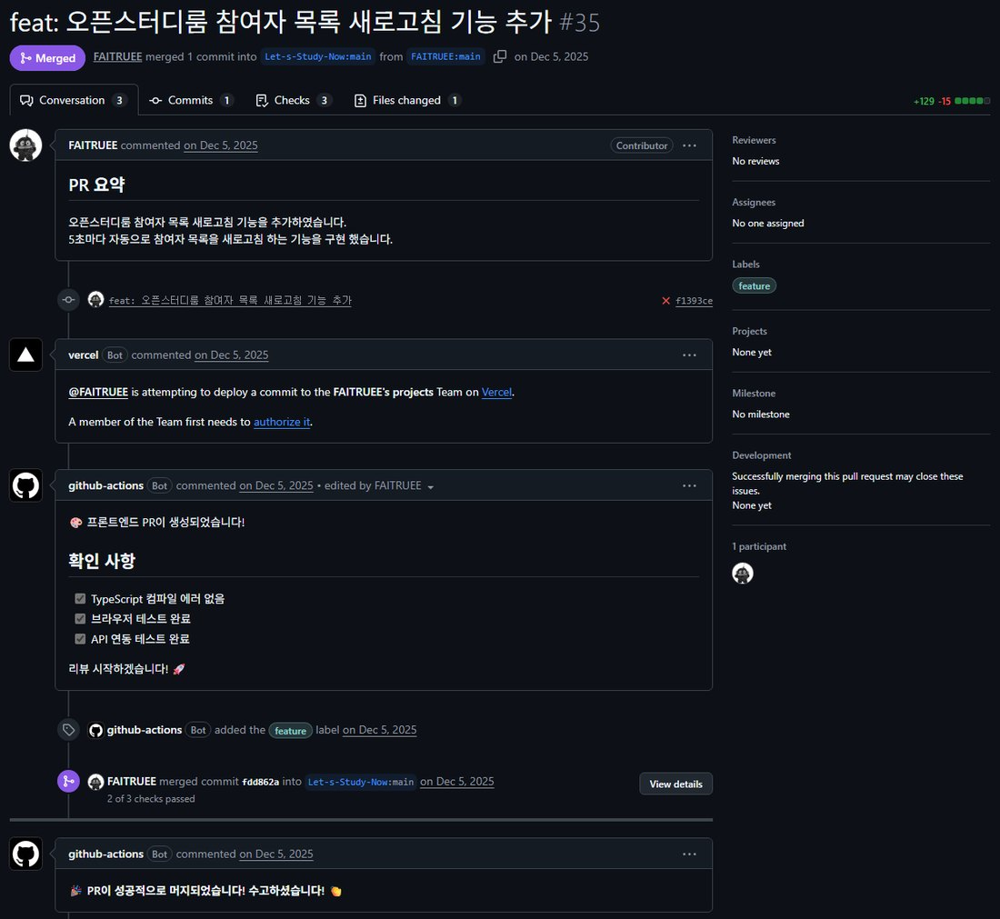
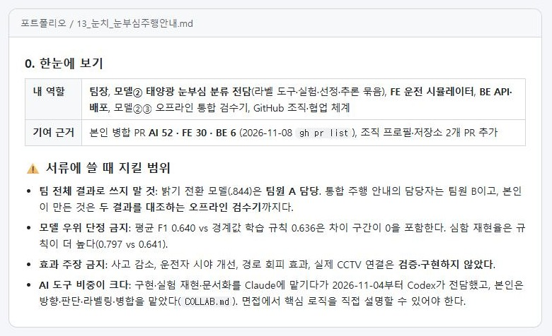
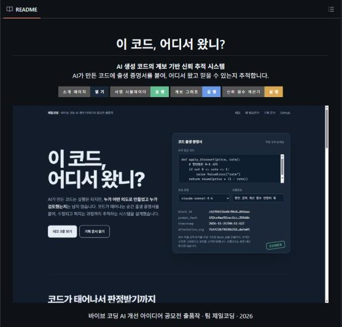
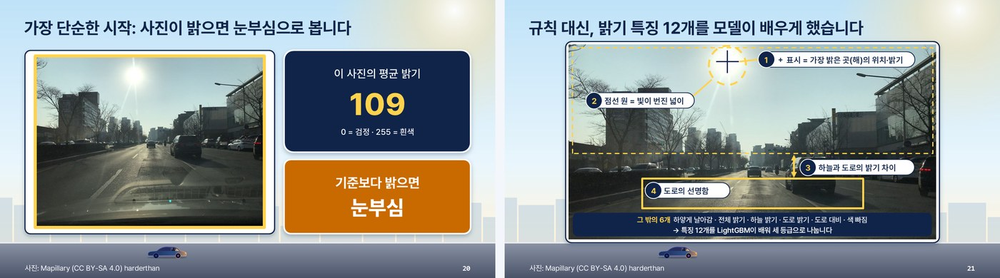
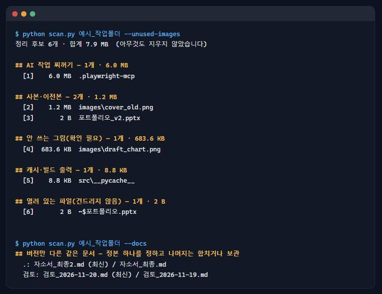

SoftBank 해커톤, One Action 배포 파이프라인
AI의 예상캐시로 42초 절약
직접 잰 값0초 손해
예상이 그대로 문서에 들어갈 뻔했습니다. 그 뒤로 "작동한다"고 적기 전에 실제로 통과시키는 것을 규칙으로 만들었고, 그게 첫 번째 스킬이 됐습니다.
assumption-check 보기AI가 "됐다"고 한 것을 그대로 적지 않습니다. 직접 재 보고, 확인한 것만 남깁니다. 그 규칙을 Claude Code가 매번 따르도록 옮긴 스킬 12종과 양식 2종입니다.
> /plugin marketplace add FAITRUEE/ai-workflow > /plugin install ai-workflow@ai-workflow
Claude Code에 붙여 넣으면 끝. 그다음엔 평소 말투로 부탁하면 맞는 스킬이 켜집니다.
예상이 그대로 문서에 들어갈 뻔했습니다. 그 뒤로 "작동한다"고 적기 전에 실제로 통과시키는 것을 규칙으로 만들었고, 그게 첫 번째 스킬이 됐습니다.
assumption-check 보기12개를 다 볼 필요는 없습니다. 지금 하는 일에 맞는 것부터 써 보세요.
혼자 개발 중인데, AI가 "됐다"고 하는 게 불안하다
팀 프로젝트를 막 시작한다
분류 대회나 실험에서 점수가 안 오른다
노션 명세나 README가 지금 코드와 맞는지 모르겠다
끝난 팀 프로젝트를 이력서·포트폴리오에 정리한다
발표가 코앞인데 청중이 이해할지 모르겠다
폴더에 쓸데없는 파일과 '_최종2' 같은 문서가 쌓였다
눌러서 펼치면 무엇을 하는지, 어떻게 부탁하면 켜지는지, 어떤 일에서 시작됐는지 볼 수 있습니다.
틀렸으면 무엇이, 왜, 얼마나 틀렸고 내가 왜 그렇게 예상했는지 네 가지를 남깁니다. 원인을 못 찾았으면 그럴듯한 설명 대신 "특정하지 못했다"고 씁니다.

단위 테스트가 통과해도 실제 서버에서는 인증 필터, 직렬화, 설정 때문에 다르게 동작합니다. 서버를 백그라운드로 띄우고 사용자가 밟는 순서 그대로 돌린 뒤 치웁니다.
curl에 한글을 바로 넣으면 깨져서 403처럼 보이던 함정까지 기록AI와 일하면 코드는 하루에도 여러 번 바뀌는데, 노션 명세와 배포 문서는 처음 쓴 날에 멈춰 있기 쉽습니다. 문서를 주장 단위로 쪼개 코드와 하나씩 대조하고, 어긋난 줄마다 근거(파일, PR)를 붙여 표로 보여 줍니다.

점수 하나만 보지 않습니다. 맞힘, 놓침, 잘못 판정을 구간별로 세고, 틀린 행을 피처와 함께 보고, 규칙이나 다른 모델과 비교합니다. 제출끼리 판정이 갈리는 행도 찾아 줍니다.
scripts/analyze.py (numpy, pandas만 필요)
오늘 머지된 PR, 실험 기록, 다음 할 일을 모아 슬랙 초안을 만듭니다. 보내는 건 사람이 하고, 키나 토큰은 절대 넣지 않습니다. 착수 전에 다른 사람의 [작업 시작]부터 읽어 같은 일을 두 사람이 잡지 않게 합니다.

새 팀 프로젝트의 노션(홈, 문서 6장, 칸반, 실험 기록, 일일진행일지)을 깔고, 다 만든 뒤 문서끼리 맞는지 점검합니다. 게스트 팀원도 각자 AI로 같은 노션을 읽도록 내부 통합 토큰 연결, 검증 스크립트, 설정법 공지문까지 다룹니다.
references/ 홈 틀, 팀원 연결 절차, 공지문scripts/verify_notion_integration.py 토큰으로 무엇이 보이는지 확인
노션이 정본, 로컬 md는 원고입니다. 원고를 그대로 붙이면 표가 깨지고 그사이 노션에서 고친 내용과 그림이 사라집니다. 현재본을 먼저 읽고 합치고, 표를 노션 형식으로 바꾸고, 통째로 바꿀 땐 백업하고, 팀원 문서는 고치지 않습니다.
조직 하나에 AI, BE, FE 저장소. 조직 공통 PR·이슈 템플릿, 브랜치 이름(feat/, fix/, docs/)으로 PR 라벨이 자동으로 붙는 워크플로, [필수]·[권장]·[의견]으로 나눈 리뷰와 squash 병합. 실제로 쓰던 파일을 그대로 넣었습니다.

팀 프로젝트를 서류에 쓸 때 가장 흔한 실수는 팀 결과를 내 것처럼 쓰는 것입니다. 커밋, git blame, PR로 최종 코드 중 내 줄과 내 PR을 세고, "서류에 쓸 때 지킬 범위"와 "[확인 필요]"를 함께 남깁니다.

서류에 저장소 링크를 걸면 심사자는 README 첫 화면과 데모 하나만 눌러 봅니다. 그런데 끝난 프로젝트는 대개 데모가 깨져 있거나 README 사진이 예전 화면입니다. 실제로 돌려 본 것만 보여 주는 순서로 다시 정리합니다.

만든 사람은 모든 숫자의 뜻을 알지만, 청중은 그 장을 처음 몇 초 보고 넘어갑니다. 장마다 "처음 듣는 사람이 여기서 무엇을 가져가나"만 묻습니다. 숫자에 단위와 뜻이 붙었는지, 지표 이름이 있는지, 그래프마다 무엇을 그렸는지 보이는지, 왜 문제인지가 해결책보다 먼저 나오는지, 대본이 실제로 읽을 문장인지 봅니다.

AI는 작업하면서 스크린샷, 중간 결과, "혹시 몰라" 만든 사본을 계속 남깁니다. 문서도 조사 메모, 검토 기록, '_최종', '_최종2'가 쌓이면 어느 게 진짜인지 나도 헷갈립니다. 둘을 같은 원칙으로 정리합니다. 먼저 보여 주고, 고른 것만, 되돌릴 수 있게.
scripts/scan.py 아무것도 지우지 않고 후보만 보여 줌. --docs로 문서 목록과 버전만 다른 같은 문서 묶음
AI에게는 초안과 구현을 맡기고, 방향과 기준, 확인과 병합은 사람이 합니다.
AI가 작업 전에 읽는 CLAUDE.md에 설계 결정, 남은 과제, 버린 설계를 적는다
AI끼리 영역을 나누고, AI는 PR까지만 올린다
AI의 예상은 재서 맞을 때만 쓴다. 측정 구간부터 고정한다
확인한 것과 틀린 이유를 문서에 쌓고, 반복되면 스킬로 만든다
스킬은 모두 아래 프로젝트에서 같은 문제를 두 번 이상 겪은 뒤에 만들었습니다.
| 프로젝트 | 규모와 역할 | AI와 일한 방식 | 남긴 것 | 링크 |
|---|---|---|---|---|
| 눈치해 눈부심 판정과 3D 운전 시뮬레이터 | 4인, 팀장 | Claude와 Codex 영역 분담. 갈리던 정답 라벨을 세 AI에 같은 기준으로 판정시켜 다시 검토(정답은 사람이) | COLLAB.mdnotion-team-hub | 서비스GitHub |
| One Action세 지역 자동 배포, 고장 버전 자동 중단 | 4인, SoftBank 해커톤 최우수상 | AI 예상은 실측해서만 채택. 확인한 결정을 CLAUDE.md에 쌓기 | assumption-checkslack-worklog | GitHub |
| 타운시그널창업 지원금으로 동네 추천 | 5인, CTO | Claude Code가 노션 명세를 직접 읽고 쓰게 연결. AI 요약문 숫자는 DB 값에서만 | notion-publishslack-worklog | 서비스GitHub |
| NowWhat할 일 우선순위 추천 | 1인, 3일 | 기획 문서 다섯 개를 AI가 먼저 읽는 정본으로. 화면·기능 번호로 코드와 대조 | api-verifytemplates/CLAUDE.md | GitHub |
| 낙상 감지소리로 낙상을 감지해 보호자에게 알림 | 5인, 팀장, 기업 과제 | CLAUDE.md 남은 과제 목록으로 서버 간 계약 구멍을 추적. 3개 저장소에 PR 템플릿과 자동 라벨 | templates/CLAUDE.mdgithub-team-setup | 서비스GitHub |
이 저장소의 규칙대로, 한계도 같은 자리에 적습니다.
oof-error-analysis는 분류 문제용입니다. 회귀에는 쓰지 않습니다.notion-team-hub의 토큰 방식은 팀원 전원이 같은 봇 권한으로 붙어서, 노션 편집 기록에 누가 썼는지 남지 않습니다. 담당 칸을 직접 채우는 규칙으로 보완합니다.scripts/를 한 번 읽어 보세요.